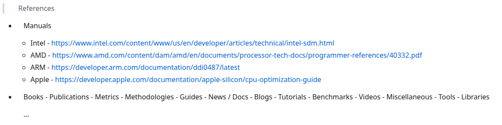

<!doctype html>
<html>
  <head>
    <meta charset="utf-8">
    <meta name="viewport" content="width=device-width, initial-scale=1.0, maximum-scale=1.0, user-scalable=no">

    <title>Performance Is Not a Number: Avoiding Microbenchmarking Pitfalls</title>

    <link rel="stylesheet" href="reveal.js/css/reveal.css">
    <link rel="stylesheet" href="reveal.js/css/theme/league.css" id="theme">
    <link rel="stylesheet" href="extensions/plugin/line-numbers/line-numbers.css">
    <link rel="stylesheet" href="extensions/css/highlight-styles/zenburn.css">
    <link rel="stylesheet" href="extensions/css/custom.css">

    <style>
      .reveal h1, .reveal h2, .reveal h3, .reveal h4, .reveal h5 { text-transform: none; }
    </style>

    <script>
      var link = document.createElement( 'link' );
      link.rel = 'stylesheet';
      link.type = 'text/css';
      link.href = window.location.search.match( /print-pdf/gi ) ? 'reveal.js/css/print/pdf.css' : 'reveal.js/css/print/paper.css';
      document.getElementsByTagName( 'head' )[0].appendChild( link );

      function set_address(self, remote, local) {
        if (window.location.search.match("local")) {
          self.href = local;
        } else {
          self.href = remote;
        }
      }
    </script>

    <meta name="apple-mobile-web-app-capable" content="yes">
    <meta name="apple-mobile-web-app-status-bar-style" content="black-translucent">
  </head>

  <body>
    <div class="reveal">
      <div class="slides">
          <script type="text/template">
          </script>
          </section>

          <section data-markdown=""
                   data-separator="^====+$"
                   data-separator-vertical="^----+$">
          <script type="text/template">
<!-- .element: data-background-image="images/title_card.png"  data-background-size="100%" -->
<!-- <br />&nbsp; -->
<!-- <br />&nbsp; -->
<!-- <br />&nbsp; -->
<!-- <br />&nbsp; -->
<!-- <br />&nbsp; -->
<!-- <br />&nbsp; -->
<!-- <br />&nbsp; -->

---

### Performance Is Not a Number: Avoiding Microbenchmarking Pitfalls
  

---

#### kris@jusiak.net
<!-- .element: style="text-align:right" -->

----

#### Disclaimer

#### Focused on [x86-64-linux-gnu](https://en.wikipedia.org/wiki/X86-64)
<!-- .element: style="text-align:left" -->

#### Based on https://github.com/qlibs/perf#resources
<!-- .element: style="text-align:left" -->

#### Powered by https://github.com/qlibs/perf (cpp23, intel/pt, linux/perf, llvm/mca, gnuplot/sixel)
<!-- .element: style="text-align:left" -->

---

#### https://github.com/qlibs/perf/blob/main/.github/workflows/Dockerfile
<!-- .element: style="text-align:left" -->

----

#### Performance

```cpp
Speed of light           ~30cm/ns
1 cycle                  0.25ns
light: 7.5 centimeters per cycle
L1 cache reference 0.5 - 1ns
L2 cache reference 2   - 4ns
L3 cache reference 10-30ns
Main memory reference 70-100 ns
Branch mispredict 3-5 ns
```

##### Modern processors (Desktop: Intel Arrow Lake, Apple M4, AMD Zen 5) execute nearly as many instructions per cycle as you can supply*
<!-- .element: class="fragment" data-fragment-index="2" style="text-align:left" -->
##### *branching, memory, and input/output
<!-- .element: class="fragment" data-fragment-index="2" style="text-align:left" -->

----

#### Performance Is Not a number!

```cpp
Benchmark  Time
--------- -----
fn        123ns // ?
```
<!-- .element: class="fragment" data-fragment-index="0" style="text-align:left" -->

```cpp
Benchmark  Time
--------- -----
fn1       123ns // ?
fn2       118ns // ?
```
<!-- .element: class="fragment" data-fragment-index="1" style="text-align:left" -->

```cpp
Benchmark  Time
--------- -----
baseline   52ns // ?
fn1       142ns // ?
fn2       123ns // ?
```
<!-- .element: class="fragment" data-fragment-index="2" style="text-align:left" -->

----

#### Benchmarking

##### 'hot spot' engineering can fail, better to reduce overall instruction count
<!-- .element: class="fragment" data-fragment-index="0" style="text-align:left" -->
##### Understanding
<!-- .element: class="fragment" data-fragment-index="0" style="text-align:left" -->
##### Corner cases
<!-- .element: class="fragment" data-fragment-index="0" style="text-align:left" -->
##### Tuning
<!-- .element: class="fragment" data-fragment-index="0" style="text-align:left" -->

---

##### But done incorrectly might be misleading!
<!-- .element: class="fragment" data-fragment-index="1" style="text-align:left" -->

----

#### Benchmarking

Impossible to have fully realstic scenarios

- branch prediction state (10'000 1/0 branches learn)
- cache/memory state
- which ports will be used
- depending on the run-time information
- ...

Notes:
- can't set specific state (can just do the best and use statistics)

<!-- .slide: data-background="darkred" -->

----

### [Micro]benchmarking - Avoiding Common Pitfalls

----

### [0] Caring about performance...

### ... on paper
<!-- .element: class="fragment" data-fragment-index="1" -->

<!-- .slide: data-background="darkblue" -->

----

> Always measure!

> Caring about performance starts with measuring it!

----


### [1] Optimizing prematurely

<!-- .slide: data-background="darkblue" -->

----

#### Premature optimizations

```cpp
template<class T>
[[always_inline]] auto hot_path(std::list<T>& input, auto... ts) {
  if (config::instance().verbose) {
    log << "slow" << std::endl;
  }

  (l.push(ts), ...);

  std::vector v = bubble_sort(l);

  if (config::instance().verbose) {
    log << "slower" << v << std::endl;
  }

  return v;
}
```

----

#### Profile first

#### Profilers
<!-- .element: class="fragment" data-fragment-index="1" style="text-align:left" -->

[timing][code] [tracy](https://github.com/wolfpld/tracy)
<!-- .element: class="fragment" data-fragment-index="1" style="text-align:left" -->
[sampling/tracing][code] [`linux-perf`](https://perf.wiki.kernel.org)
<!-- .element: class="fragment" data-fragment-index="1" style="text-align:left" -->
[sampling/tracing][code] [`intel-vtune`](https://www.intel.com/content/www/us/en/docs/vtune-profiler)
<!-- .element: class="fragment" data-fragment-index="1" style="text-align:left" -->
[sampling][code] [`amd-uprof`](https://www.amd.com/en/developer/uprof.html)
<!-- .element: class="fragment" data-fragment-index="1" style="text-align:left" -->
[sampling][code] [`gperftools`](https://github.com/gperftools/gperftools)
<!-- .element: class="fragment" data-fragment-index="1" style="text-align:left" -->
[stats][code] [likwid](https://github.com/RRZE-HPC/likwid)
<!-- .element: class="fragment" data-fragment-index="1" style="text-align:left" -->
[simulating][code] [`callgrind`](https://valgrind.org/docs/manual/cl-manual.html)
<!-- .element: class="fragment" data-fragment-index="1" style="text-align:left" -->
[sampling][coz](https://github.com/plasma-umass/coz) - threading
<!-- .element: class="fragment" data-fragment-index="1" style="text-align:left" -->
[tracing][magictrace](https://github.com/janestreet/magic-trace)
<!-- .element: class="fragment" data-fragment-index="1" style="text-align:left" -->

https://github.com/qlibs/prof

----

#### [Top-down Microarchitecture Analysis Method](https://www.intel.com/content/www/us/en/docs/vtune-profiler/cookbook/2023-0/top-down-microarchitecture-analysis-method.html)

```cpp
prof::linux::perf profiler{"/dev/shm/perf"};
profiler.start(); // syscall
// ...
profiler.stop();  // syscall
```

```cpp
perf stat --topdown --control=fifo:/dev/shm/perf --delay=-1 ./a.out
```

---

```sh
Retiring Bad Speculation Frontend Bound Backend Bound Heavy Operations Light Operations Branch Mispredict       Machine Clears        Fetch Latency      Fetch Bandwidth         Memory Bound           Core Bound 
  22.0%           13.3%          31.8%         32.9%             3.1%            18.8%             12.9%                 0.4%                21.6%                10.2%                23.1%                 9.8% 
```

----

##### llvm-xray

```cpp
auto fn(); // -fxray-instrument
  nop     word ptr [rax + rax + 512]    // XRayEntryType::ENTRY
  ...
  nop     word ptr cs:[rax + rax + 512] // XRayEntryType::EXIT
```
<!-- .element: style="text-align:left" -->

```cpp
void handler(int func_id, XRayEntryType entry) {
  if (entry == XRayEntryType::ENTRY) {
    profiler.start();
  } else {
    profiler.stop();
  }
}
```
<!-- .element: class="fragment" data-fragment-index="1" style="text-align:left" -->

```cpp
int main() {
  __xray_set_handler(handler);
  __xray_patch(); // nop->jmp &handler
}
```
<!-- .element: class="fragment" data-fragment-index="2" style="text-align:left" -->


#### https://llvm.org/docs/XRay.html
<!-- .element: style="text-align:left" -->

----

### [2] Assuming measurements follow normal distrubution

<!-- .slide: data-background="darkblue" -->

----

    taking mean!
      - mesuremnets are not following normal distrubution
    show chart of distribution
        - Timing data is usually skewed, not symmetric
      - use min, median, percentials instead

  - statistical approach
    ```cpp
      perf::metric::stat::min;
      perf::metric::stat::max;
      perf::metric::stat::mean;
      perf::metric::stat::geomean;
      perf::metric::stat::median;
      perf::metric::stat::percentile;
      perf::metric::stat::p99;
      perf::metric::stat::p75;
      perf::metric::stat::p50;
      perf::metric::stat::p25;
      perf::metric::stat::variance;
      perf::metric::stat::stddev;      // degrees_of_freedom = 1
      perf::metric::stat::sem;         // standard error
      perf::metric::stat::mae;         // median absolute errror
      perf::metric::stat::mad;         // median absolute deviation
      perf::metric::stat::cv;          // coefficient of variation
      perf::metric::stat::z_score;
      perf::metric::stat::t_score;
    ```

    show chart of line incorrect

    plot
      - gnuplot charts (sixel) and (console)
        - ecdf! // show on the console output
          ```cpp
          perf::plot::hist
          perf::plot::bar
          perf::plot::box
          perf::plot::line

            important - show error bars (show where the previous one could be slower)

          perf::plot::ecdf // https://en.wikipedia.org/wiki/Empirical_distribution_function

            - running on the server side - sixel / show console picture
----

### [3] Assuming measurements are independent
### [3] Ingoring OS effects

<!-- .slide: data-background="darkblue" -->

----

Minimial control
  `pyperf system tune`

Moderate control
  >     # Enable Kernel Mode Task-Isolation (https://lwn.net/Articles/816298)
  >     # cat /sys/devices/system/cpu/isolated
  >     isolcpus=<cpu number>,...,<cpu number>
        - set affinity / set prioroity
        - seperate process

Full control
  - UEFI (wmsr - disable/enable cache (can't be done without user-space))
  - jtags...

----

### [4] Not measureing the right thing

<!-- .slide: data-background="darkblue" -->

----

```cpp
start();
fn();
stop();
```

```cpp
for (auto i = 0; i < iterations; ++i) {
  start();
  fn();
  stop();
}
```

```cpp
start();
for (auto i = 0; i < iterations; ++i) {
  fn();
)
stop();

const auto time = (stop - start) / iterations; // ?
```

----

for(..)

----

// This may lead to erroneous conclusions about branch-heavy
// algorithms outperforming branch-free alternatives.
//
// VaryInputs(Measure(Repeat(func)))
// Measure(Repeat(VaryInputs(func)))

latency vs throughput

Latency - time it takes for a single operation to complete (ns)
  cpu -> fpga -> asic

    ```cpp
    namespace perf::code {
      constexpr auto align(std::align_val_t Alignment) {
        asm volatile(".align %c0" : : "i"(Alignment));
      }
    }
    ```

  ```cpp
  template<std::size_t N, std::align_val_t Alignment>
  [[gnu::section("latency")]] [[gnu::aligned(Alignment)]] constexpr auto latency(auto&& fn, auto&&... ts) {
    auto checksum = 0u;
    perf::code::align(Alignment); for (auto i = 0u; i < N; ++i) {
      checksum ^= fn(checksum ^ ts...); // data dependency
      perf::memory::synchronize(); // required if there is a memory write
    }
    perf::compiler::prevent_elision(checksum);
  }
  ```

        ```cpp
        latency = ns(time) / operations;
        ```

      >   auto add  = [](int a, int b) { return a + b; };
      >   auto sub  = [](int a, int b) { return a - b; };
      >   auto mult = [](int a, int b) { return a * b; };
      >   auto div  = [](int a, int b) { return a / b; };

    Instruction level
      - nanoBench - https://github.com/andreas-abel/nanoBench
      - nanoBench: A Low-Overhead Tool for Running Microbenchmarks on x86 Systems - https://arxiv.org/abs/1911.03282
      - nanobench (unroll 2x - uroll 1x - link pdf) -> uops.table

        ```cpp
        template<std::size_t N>
        constexpr auto unroll(auto&& fn) {
          [&]<std::size_t... Ns>(std::index_sequence<Ns...>) {
            (fn(), ...);
          }(std::make_index_sequence<N>{});
        }
        ```

        ```cpp
        time = unroll<N*2>(fn) - unroll<N>(fn);
        ```

        

      - llvm.exegesis (llvm.mca) - https://llvm.org/docs/CommandGuide/llvm-exegesis.html

      - trust your framework (vs mca)

Throughput - total number of operations or tasks completed in a given amount of time (op/s)
  cpu -> gpu/tup

  ```cpp
    perf::bench::throughput::policy::seq;
    perf::bench::throughput::policy::unseq;
    perf::bench::throughput::policy::unroll;
    perf::bench::throughput::policy::par;
    perf::bench::throughput::policy::omp;
    perf::bench::throughput::policy::cuda;
  ```

      (note) that 10% seq execution can't be parallilzed
        - latency - network request, trade
        - throughput - backtest/llms

        ```
        latency per instruction vs mca
        ```

        ```cpp
        throughput = operations / seconds(time);
        inverse_throughput = ns(time) / operations;
        ```
----

### [5] Not verifying results

<!-- .slide: data-background="darkblue" -->

----


debug verify results / can be done in warmup phase

```cpp
[]<bool debug = {}>(std::vector<int>& v) {
  std::ranges::sort(v);
  if constexpr (debug) {
    assert(is_sorted(v));
  }
};
```

----

### [6] Ignoring hardware effects (aka not having realistic scenarios understnaing)

<!-- .slide: data-background="darkblue" -->

----

not knowing what to optimize and how
  - Modern processors execute nearly as many instructions per cycle as you can supply*

Data distrubtion (branch prediction)

    - input parameters
      ```cpp
      using perf::data::unpredictable;                  // not elided and not predicted
      ```
      - branch prediction

  -fizz_buzz (results with charts)
    - branch prediction, latency vs throughput, alignemnt

    import perf;
    bench...

  - std::sort example
    different sizes
    throughput

    import perf

  Branchy code can do well in synthetic benchmarks, but be careful.

----

### [7] Ignoring compiler effects

<!-- .slide: data-background="darkblue" -->

----

- realsistc scenarios
  alignment, warmup, threading, pin ...

  namespace cpu {
    #if PERF_GNU == 1 and defined(__x86_64__)
    namespace pipeline {
      inline constexpr auto flush = [] {
        asm volatile("cpuid" : : "a"(0), "c"(0) : "ebx", "edx", "memory");
      };
    } // namespace pipeline

  template<class T = std::size_t, class TAllocator = std::allocator<T>>
  inline constexpr auto pollute(const std::size_t size)
    requires (requires { T{}; } or requires { T(size); }) {
    verify(size > 0u);
    std::list<T, TAllocator> data{};
    auto n = size;
    while (n--) {
      if constexpr (requires { T(n); }) {
        data.push_back(T(n));
      } else {
        data.push_back(T{});
      }
    }
  }

  inline constexpr auto pre_fault =
    [](std::span<std::byte> data, const std::size_t page_size = info::sys::page_size()) {
      for (auto i = 0u; i < data.size(); i += page_size) {
        data[i] = {};
      }
    };

  inline constexpr auto flush = [](std::span<const std::byte> data) {
    const auto size = data.size();
    const auto cache_line_size = info::memory::dcache()[info::memory::level::L1].line_size;
    const auto ptr = std::bit_cast<std::uintptr_t>(data.begin());
    const auto aligned_start = ptr & ~(cache_line_size - 1u);
    const auto aligned_end = (ptr + size + cache_line_size - 1u) & ~(cache_line_size - 1u);
    const auto aligned_size = aligned_end - aligned_start;

    #if PERF_GNU == 1 and defined(__x86_64__)
    for (auto i = 0u; i < aligned_size; i += cache_line_size) {
      asm volatile("clflush (%0)" :: "r"(reinterpret_cast<const void*>(aligned_start + i)));
    }
    #elif __has_builtin(__builtin___clear_cache)
    __builtin___clear_cache(
      reinterpret_cast<const std::byte*>(aligned_start),
      reinterpret_cast<const std::byte*>(aligned_start + aligned_size)
    );
    #endif
  };

----

### [8] Not levaraging PMU counters / HW profiling / metrics

<!-- .slide: data-background="darkblue" -->

----

  Nonosecond count!

    TSC   - Time Stamp Counter

      Time based benchmarking

        clock-gettime


    Time is discrete: clock cycle
      Processors: 4 GHz (4*10^9 cycles per second)
      One cycle is 0.25 nanoseconds
      light: 7.5 centimeters per cycle
      One byte per cycle: 4 GB/s

    RDPMC - Read Performance Monitoring Counters
    PEBS  - Precise Event-Based Sampling

    - tsc / clock
      tsc = [] {
        // get it from higway
      };

    - rdpmc (current thread)
      inline constexpr auto rdpmc = [](const std::uint64_t id) {
        std::uint64_t eax{}, edx{};
          asm volatile(
            "rdpmc" : "=a"(eax), "=d"(edx) : "c"(id)
          );
          return ((static_cast<std::uint64_t>(edx)) << 32u) | static_cast<std::uint64_t>(eax);
      };


      ```cpp
      using perf::stat::cpu_clock;
      using perf::stat::task_clock;
      using perf::stat::page_faults;
      using perf::stat::faults;
      using perf::stat::major_faults;
      using perf::stat::minor_faults;
      using perf::stat::alignment_faults;
      using perf::stat::emulation_faults;
      using perf::stat::context_switches;
      using perf::stat::cgroup_switches;
      using perf::stat::cpu_migrations;
      using perf::stat::migrations;
      using perf::stat::cycles;
      using perf::stat::instructions;
      using perf::stat::branch_misses;
      using perf::stat::bus_cycles;
      using perf::stat::cache_misses;
      using perf::stat::cache_references;
      using perf::stat::branches;
      using perf::stat::branch_instructions;
      using perf::stat::stalled_cycles_backend;
      using perf::stat::idle_cycles_backend;
      using perf::stat::stalled_cycles_frontend;
      using perf::stat::idle_cycles_frontend;
      using perf::stat::llc_misses;
      using perf::stat::l1_misses;
      using perf::stat::l1_dcache_loads;
      using perf::stat::l1_dcache_load_misses;
      using perf::stat::l1_icache_loads;
      using perf::stat::l1_icache_load_misses;
      using perf::stat::dtlb_loads;
      using perf::stat::dtlb_load_misses;
      using perf::stat::itlb_loads;
      using perf::stat::itlb_load_misses;
      ...
      ```

      ```cpp
      using perf::record::mem_loads;
      using perf::record::mem_stores;
      ```

  perf::profiler profiler{perf::stat::tsc, perf::stat:cycles, perf::stat::instructions, perf::trace::instructions, perf::trace::cycles, perf::record::mem_loads, perf::record::mem_stores};
  static_assert(profiler::is_syscall_free);

- use commonly recognized metrics
    ```
    inline constexpr auto ipc = instructions / cycles; // instruction per cycle (ipc)
    inline constexpr auto cpi = cycles / instructions; // // cycles per instruction (cpi, inverse of ipc)
    inline constexpr auto l1_dcache_miss_rate = l1_dcache_load_misses / l1_dcache_loads;
    inline constexpr auto cache_miss_rate = cache_misses / cache_references;
    inline constexpr auto branch_miss_rate = branch_misses / branches;
    inline constexpr auto llc_miss_rate = llc_misses / cache_references;

```

    /// l1 instruction cache miss rate
    inline constexpr auto l1_icache_miss_rate = l1_icache_load_misses / l1_icache_loads;

    /// dtlb miss rate
    inline constexpr auto dtlb_miss_rate = dtlb_load_misses / dtlb_loads;

    /// itlb miss rate
    inline constexpr auto itlb_miss_rate = itlb_load_misses / itlb_loads;

    /// stalled cycles rate (frontend)
    inline constexpr auto frontend_stall_rate = stalled_cycles_frontend / cycles;

    /// stalled cycles rate (backend)
    inline constexpr auto backend_stall_rate = stalled_cycles_backend / cycles;

    /// memory access rate
    inline constexpr auto memory_stall_ratio = stalled_cycles_backend / cycles;

    /// overall stall rate
    inline constexpr auto total_stall_rate = (stalled_cycles_backend + stalled_cycles_frontend) / cycles;

     /// cpu migrations per cycles
    inline constexpr auto cpu_migration_rate = cpu_migrations / cycles;

    /// context switches per cycles
    inline constexpr auto context_switch_rate = context_switches / cycles;

    /// page fault rate
    inline constexpr auto page_fault_rate = faults / cycles;

    /// page fault rate (major faults per total faults)
    inline constexpr auto major_fault_rate = major_faults / cycles;

    /// page fault rate (minor faults per total faults)
    inline constexpr auto minor_fault_rate = minor_faults / cycles;
  } // namespace metric

  - A Top-Down method for performance analysis and counters architecture - https://www.researchgate.net/publication/269302126_A_Top-Down_method_for_performance_analysis_and_counters_architecture

  
  
    common metric
    cpu bound

    perf[top_down::retiring]

    ```
    // l1
    inline constexpr auto retiring = aux::retiring / aux::slots;
      inline constexpr auto heavy_operations = aux::heavy_operations / aux::slots;
      inline constexpr auto light_operations = retiring - heavy_operations;

    inline constexpr auto bad_speculation = aux::bad_speculation / aux::slots;
      inline constexpr auto branch_mispredict = aux::branch_mispredict / aux::slots;
      inline constexpr auto machine_clears = bad_speculation - branch_mispredict;

    inline constexpr auto frontend_bound = aux::frontend_bound / aux::slots;
      inline constexpr auto fetch_latency = aux::fetch_latency / aux::slots;
      inline constexpr auto fetch_bandwidth = frontend_bound - fetch_latency;

    inline constexpr auto backend_bound = aux::backend_bound / aux::slots;
      inline constexpr auto memory_bound = aux::memory_bound / aux::slots; // LLMs
      inline constexpr auto core_bound = backend_bound - memory_bound;
    ```

    find the slide

----

### [9] Not understanding (profiling/tracing/analyzing) results

<!-- .slide: data-background="darkblue" -->

----

  - optimizd away

  ```cpp
  constexpr auto prevent_elision(const auto& t) {
    asm volatile("" :: "r,m"(t) : "memory");
  }
  constexpr auto prevent_elision(const auto* t) {
    asm volatile("" :: "g"(t) : "memory");
  }
  ```

  ```cpp
  template<auto Begin = []{}, auto End = []{}>
  constexpr auto is_elided(auto&& fn) -> bool {
    const auto invoke = [&] {
      code::label<Begin>();
      fn();
      code::label<End>();
    };
    prevent_elision(&decltype(invoke)::operator());
    return code::labels[Begin] == code::labels[End];
  }
  ```

  ```cpp
  assert(perf::compiler::is_elided([] { }));
  assert(perf::compiler::is_elided([] { int i{}; i++; }));
  assert(not perf::compiler::is_elided([] {
    int i{};
    perf::compiler::prevent_elision(i++);
  }));
  ```

  Want performance - know your hardware!

  IPT   - Intel Processor Trace
  (LBR) - Last Branch Record

  - tracing - intel pt
    ```
    using perf::trace::instructions;
    using perf::trace::cycles;
    ```

  - code labels
  ```cpp
  constexpr auto label(conts auto id) {
    asm volatile goto(
      ".pushsection labels, \"aw\" \n"
      ".quad %c0, 0b \n`
      ".popsection \n"
      : : "i"(id) : "memory"
    );
  }
  ```

  ```cpp
    extern "C" auto __start_labels [[gnu::section("labels")]] [[gnu::weak]];
    extern "C" auto __stop_labels  [[gnu::section("labels")]] [[gnu::weak]];

    constinit std::unordered_map<std::uint64_t, std::uint64_t> labels{&__start_labels, &__stop_labels};
  ```

    ```cpp
    perf::profiler profiler{perf::trace::instructions, perf::trace::cycles}
    const auto invoke = [&](auto&& fn, auto&&... ts) {
      profiler.start();
      perf::compiler::prevent_elision(fn(ts...));
      profiler.stop();
    };
    invoke(fizz_buzz, std::rand());
    ```

    show ipc per instruction

    - disassemble vs trace vs sample

    ```cpp
        disasm      trace    sample
    1   mov
    2
    3
    4
    5
    6
    ```

  mca
      remove dependency chains

      - llvm-mca - https://llvm.org/docs/CommandGuide/llvm-mca.html (doesn't fetch, depends on your description)

        ```cpp
        perf::mca::timeline;                        // produces a detailed report of each instruction’s state transitions through an instruction pipeline
        perf::mca::resource_pressure;               // reports the average number of resource cycles consumed every iteration by instructions for every processor resource unit available on the target
        perf::mca::bottleneck;
        ```

      - osaca - https://github.com/RRZE-HPC/OSACA
      - uica - https://uica.uops.info

      - stat (perf) vs analyze (mca)

      ```
      ```

      ```cpp
      fizz_buzz(unpredictable)/latency:
            trace.instructions record::mem_loads timeline timeline resource_pressure
      1     1                                      1
      2     2                                      1           1
      3                                                        1
      3
      4     10                                     1
      4     11
      5                                            1
      5     12
      ```

    perf::plot::flamegraph
    ```
    main;init;loadConfig 10
    main;init;checkDependencies 5
    main;start;connectDB 20
    main;start;runQuery 30
    main;start;runQuery;parseResult 25
    main;start;runQuery;logStats 5
    main;shutdown;cleanup 8
    ```

    screeenshots
    ```
    ```cpp
    perf::plot::complexity (big0)
    ```

    - https://flamegraph.com
----

### [10] Not having baseline

<!-- .slide: data-background="darkblue" -->

----

perf::runner bench{perf::bench::latency{}};

bench(perf::bench::baseline([]{});
bench(fizz_buzz, 1);
report()

----


### [11] Not knowing when to stop micro-optimizing

max ipc

----

### [12] Not tracking results / documenting learnings

<!-- .slide: data-background="darkblue" -->

----

    - learning
    - test it perf::verify(assembly)
    - continous integration

    - jupyter notebook approach

  Eport/Share (jupyter)
    - perf::json
    - code says only what works and not what doesn't
    - what didn't what work
    - share studies!
      - github
    ### [https://github.com/qlibs/perf#studies](https://github.com/qlibs/perf/discussions/4)

----

### Studies

#### [https://github.com/qlibs/perf#studies](https://github.com/qlibs/perf/discussions/4)

----

Techniques
  Data level parallelsim - SWAR, SIMD (AVX512)
  Data oriented design
  Branchless programming


1. Branching

  perf::log({
    {"sys",  perf::info::sys::triple()},
    {"cxx",  perf::info::compiler()},
    {"cpu",  perf::info::cpu()},
    {"iL1",  perf::info::memory::icache()},
    {"dL1",  perf::info::memory::dcache()},
  });

  ```
  name info
  ---- -------------------------------------------------------
  sys  x86_64-pc-linux-gnu
  cxx  gcc-15.0.0
  cpu  12th Gen Intel(R) Core(TM) i7-12650 (alderlake:6.154.3) 2.67Ghz
  iL1  32Kb (64b)
  dL1  48Kb/12 (64b)
  ```

  Branches that jump backward (loops) and are actually taken the first time → taken without miss.
  All other branches (forward jumps that are taken) → mispredict on first encounter.
  - show hot path
  ```
  if (foo) [[likely]] // taken (that's why you can use likely)
  ```
  ```
  [[gnu::always_inline]] inline void fast_path() { std::puts("fast_path"); }
  [[gnu::cold]] void slow_path() { std::puts("slow_path"); }

  constexpr jmp::static_branch<bool> disarmed = false;

  void trigger() {
    if (not disarmed) { // { false: nop, true: jmp }
      fast_path();
    } else {
      slow_path();
    }
  }
  trigger(): // $CXX -O3
    nop                              # code patching (nop->jmp .Ltmp1)
   .Ltmp0:                           # fast path (inlined)
    mov edi, OFFSET FLAT:.LC1
    jmp puts
   .Ltmp1:                           # slow path (cold)
    jmp slow_path() # [clone .cold]
  ```
      // cant measure that with disassembly
  https://github.com/qlibs/jmp

2.  Alignment / latency:
  template<std::align_val_t Alignment>
    requires (std::has_single_bit(std::size_t(Alignment)))
  inline constexpr auto align = [] {
    asm volatile(".align %c0" : : "i"(Alignment));
  };

  code::align<64>

3. dispatching
- mph / magic_lut
- pext

  https://github.com/qlibs/mph

----

### Performance Is Not a Number!

----

#### Further readings



#### [https://github.com/qlibs/perf#resources](https://github.com/qlibs/perf?tab=readme-ov-file#User-Guide)

          </script>
        </section>

      </div>
    </div>

    <script src="reveal.js/lib/js/head.min.js"></script>
    <script src="reveal.js/js/reveal.js"></script>

    <script>

      // Full list of configuration options available at:
      // https://github.com/hakimel/reveal.js#configuration
      Reveal.initialize({

        // Display controls in the bottom right corner
        controls: false,

        // Display a presentation progress bar
        progress: false,

        // Display the page number of the current slide
        slideNumber: 'c/t',

        // Push each slide change to the browser history
        history: true,

        // Enable keyboard shortcuts for navigation
        keyboard: true,

        // Enable the slide overview mode
        overview: false,

        // Vertical centering of slides
        center: true,

        // Enables touch navigation on devices with touch input
        touch: true,

        // Loop the presentation
        loop: false,

        // Change the presentation direction to be RTL
        rtl: false,

        // Turns fragments on and off globally
        fragments: true,

        // Flags if the presentation is running in an embedded mode,
        // i.e. contained within a limited portion of the screen
        embedded: false,

        // Flags if we should show a help overlay when the questionmark
        // key is pressed
        help: true,

        // Flags if speaker notes should be visible to all viewers
        showNotes: false,

        // Number of milliseconds between automatically proceeding to the
        // next slide, disabled when set to 0, this value can be overwritten
        // by using a data-autoslide attribute on your slides
        autoSlide: 0,

        // Stop auto-sliding after user input
        autoSlideStoppable: true,

        // Enable slide navigation via mouse wheel
        mouseWheel: false,

        // Hides the address bar on mobile devices
        hideAddressBar: true,

        // Opens links in an iframe preview overlay
        previewLinks: false,

        // Transition style
        transition: 'none', // none/fade/slide/convex/concave/zoom

        // Transition speed
        transitionSpeed: 'default', // default/fast/slow

        // Transition style for full page slide backgrounds
        backgroundTransition: 'none', // none/fade/slide/convex/concave/zoom

        // Number of slides away from the current that are visible
        viewDistance: 1,

        // Parallax background image
        parallaxBackgroundImage: '', // e.g. "'https://s3.amazonaws.com/hakim-static/reveal-js/reveal-parallax-1.jpg'"

        // Parallax background size
        parallaxBackgroundSize: '', // CSS syntax, e.g. "2100px 900px"

        // Number of pixels to move the parallax background per slide
        // - Calculated automatically unless specified
        // - Set to 0 to disable movement along an axis
        parallaxBackgroundHorizontal: null,
        parallaxBackgroundVertical: null,

        // Optional reveal.js plugins
        dependencies: [
          { src: 'reveal.js/lib/js/classList.js', condition: function() { return !document.body.classList; } },
          { src: 'reveal.js/plugin/markdown/marked.js', condition: function() { return !!document.querySelector( '[data-markdown]' ); } },
          { src: 'reveal.js/plugin/markdown/markdown.js', condition: function() { return !!document.querySelector( '[data-markdown]' ); } },
          { src: 'reveal.js/plugin/highlight/highlight.js', async: true, callback: function() { hljs.initHighlightingOnLoad(); } },
          { src: 'reveal.js/plugin/zoom-js/zoom.js', async: true },
          { src: 'reveal.js/plugin/notes/notes.js', async: true },
          { src: 'extensions/plugin/line-numbers/line-numbers.js' }
        ]
      });

      function handleClick(e) {
        if (1 >= outerHeight - innerHeight) {
          document.querySelector( '.reveal' ).style.cursor = 'none';
        } else {
          document.querySelector( '.reveal' ).style.cursor = '';
        }

        e.preventDefault();
        if(e.button === 0) Reveal.next();
        if(e.button === 2) Reveal.prev();
      }
    </script>

  </body>
</html>
